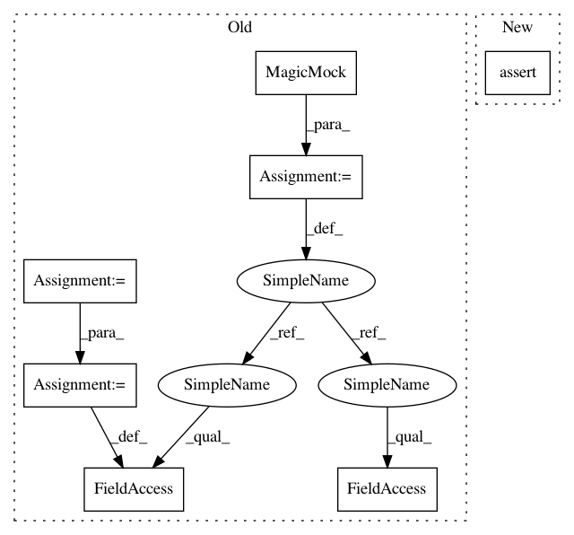

c18abcc72779987a43de35add51864a5143ba998,snips_nlu/tests/test_probabilistic_intent_parser.py,TestProbabilisticIntentParser,test_should_fit_only_selected_intents,#TestProbabilisticIntentParser#,202
Before Change
mock_coffee_tagger = MagicMock()
mock_coffee_tagger.tagging_scheme = tagging_scheme
mock_coffee_tagger.language = language
mock_tea_tagger = MagicMock()
mock_tea_tagger.tagging_scheme = tagging_scheme
mock_tea_tagger.language = language
taggers = {
"MakeCoffee": mock_coffee_tagger,
"MakeTea": mock_tea_tagger
}
After Change
parser.fit(dataset, {intent})
// Then
self.assertItemsEqual(parser.slot_fillers.keys(), [intent])
self.assertTrue(parser.slot_fillers[intent].fitted)
def test_should_be_serializable_before_fitting(self):
// Given
In pattern: SUPERPATTERN
Frequency: 3
Non-data size: 7
Instances
Project Name: snipsco/snips-nlu
Commit Name: c18abcc72779987a43de35add51864a5143ba998
Time: 2018-01-18
Author: adrien.ball@snips.net
File Name: snips_nlu/tests/test_probabilistic_intent_parser.py
Class Name: TestProbabilisticIntentParser
Method Name: test_should_fit_only_selected_intents
Project Name: snipsco/snips-nlu
Commit Name: c18abcc72779987a43de35add51864a5143ba998
Time: 2018-01-18
Author: adrien.ball@snips.net
File Name: snips_nlu/tests/test_probabilistic_intent_parser.py
Class Name: TestProbabilisticIntentParser
Method Name: test_should_fit_only_selected_intents
Project Name: arviz-devs/arviz
Commit Name: 7ffcd4a2a5213c0a7de9fdc3aff4725c166db986
Time: 2019-01-27
Author: ahartikainen@users.noreply.github.com
File Name: arviz/tests/test_plots.py
Class Name:
Method Name: test_plot_ppc_discrete
Project Name: pfnet/optuna
Commit Name: 8ebe10a8d631b8f06b348d4dcb2f4763b824fe32
Time: 2019-08-22
Author: contact@c-bata.link
File Name: tests/test_trial.py
Class Name:
Method Name: test_trial_should_prune